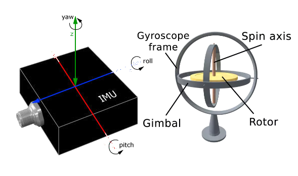

Research
Conducting Research on Past Solutions and Different Technologies.

Related Projects and Hardware Review
Our task consists of creating a hospital porter tracking solution in order to increase the efficiency of porters within hospitals. In particular and contrary to other past projects, our solution focusses on tracking porters and setting them tasks in order to best coordinate delivery of medical freight using drones. This comes with the associated problems of timing porters based on drone arrival times.
It is important to review existing projects so that one may bring forward their merits in our solution. Additionally, by reviewing existing solutions, not only can we learn from the merits, we may also learn from any shortcomings and flaws with regard to previous projects.
UBI Solutions

UBI Solutions is a French software company primarily focussed on providing asset tracking solutions. It creates a variety of solutions for corporations in the food industry, laundry, retail and more. Typically solutions revolve around using RFID tags and mobile or fixed readers. [1] However, other solutions are also used and the company's focus is providing an effective solution tailored to a client.
In this review we will look at one solution, picked among many of their projects due to its similarity to the context of our own project. It was in part picked randomly from several similar projects, due to said projects also being similarly well documented with similar merits [2] [3].
UBI Solutions' Hospital Assets Tracking makes use of BLE tags and beacons to track assets such as bed sheets moving throughout the hospital. They work on a gateway system where BLE gateways track individual BLE tags throughout the hospital. BLE tags each have unique identifiers that they transmit. In addition to tracking, the tags are fitted with shock, temperature and humidity sensors where relevant to track the health of the asset [4].
Goals of the Solution
The main goals of the system are:
To free up staff time
Reducing loss of equipment due to theft
Reduce costs due to negligence
To reliably log asset usage data
Implement automatic preventative care of assets
Effectiveness of the Solution
The solution is effective, minimal and cost effective. It has a lot of the features that we would need for a hospital porter tracking system, where instead of assets we would track porters. It has some redundant features such as the sensors to detect health of the asset, however the overall principle is the same. It does however miss 1. a method to communicate to porters their tasks and 2. a method to decide which porters are optimal for tasks. Both features missing are quite essential and something we would have to explore ourselves.
RFID and NFC Tags

More notably, we see that UBI Solutions has picked BLE (Bluetooth Low Energy) tags instead of alternatives such as RFID(Radio-Frequency Identification) tags and NFC(Near Field Communication) tags. BLE tags have much further range of detection than RFID tags []. This enables better tracking of assets which we may not be able to scan individually due to their high number. For our project problem, hospital porters will often be in a hurry and may be stressed. In addition, hospital porters typically will not be used to scanning a tag whenever they walk past checkpoints. In hospitals, there is not time for error and mistake due to needing time to form a habit. As such, we similarly regard RFID tags as an inappropriate solution due to high potential for mistakes. This is quite different to UBI Solutions who most likely picked BLE beacons due to their concern for security.
Discussion on Merits and Pitfalls of NFC tags
NFC tags which UBI Solutions has used for other projects, and likely also considered for their hospital asset tracking solution are also inappropriate for our project due to the reasons outlined above. They are also only effective at short ranges.
BLE Tags

One might also be concerned that many BLE, RFID and NFC tags are not able to perform two way communication. From our requirements, we need the hospital porters to be able to reject tasks and set their busy status. This is for the sake of both porter information privacy, breaks and in case they are busy with other tasks that are set without the system, i.e. a Doctor directly asks a porter. However, it should be noted that in our solution, the tags will not be performing the communication. The tags will serve as markers of positions in the hospital and smartphones which pick up on their mac addresses will then post these addresses as location dater to the web server.
Discussion on Merits and Pitfalls of BLE
Further research on BLE beacons not only determines that they are typically long reaching enough and strong enough signal for the purposes of our project, but that they, like the name implies, are low energy and low maintenance [5]. They would minimally add to the operating costs of the hospital and are not likely to break. They are also extremely cheap and having many of these dotted around a hospital should not pose a problem with expenses. BLE beacons do however need to be installed and require careful planning.
Navenio: Hospital Staff Tracking

Navenio is an Oxford based company focussed on increasing ROI of hospitals. They achieve this with their smartphone based location tracking and task assignment solution to assign tasks. They have utilize a mixture of IMU (inertial measurement unit), GPS and wifi to accurately track staff locations. Further to this, they utilize a task assignment system and collect logistic data with some amount of automated processing to generate recommendations to increase efficiency.
As mentioned, Navenio's solution utilizes IMU, GPS and wifi to accurately track staff location. They utilize PDR (Pedestrian Dead Reckoning) algorithms to adjust for ways a smartphone is held and deep learning based correction of inertia discrepancies due to positioning of the phone [4]. They also make use of camera data where possible.GPD and wi-Fi is used to accurately detect when someone enters or exits the building. The system is interestingly capable of multiple floor location and tracking. Maps of the hospital are automatically built using historical tracking data of all the staff.
Goals of the Solution
The main goals of the system are:
To free up staff time
Optimal assignment of tasks
Provide a solution that has no dependency on installing infrastructure
To reliably log movement data for efficiency recommendations
Effectiveness of the Solution
The solution is effective, minimal and cost efficient, installation wise. Development of the algorithms and potential problems may create heavy costs however. As the solution utilizes AI to accurately location track, extensive collection of phone movement data is required and will create heavy costs.
To pick the right technology, for our solution, we further research these technologies navenio uses and weigh their pros and cons.
Inertial Measurement Unit
Navenio's use of IMU tracks the directional movement of a phone through the hospital. IMU stands for Inertial Measurement Unit, which is a device that measures the orientation, velocity, and acceleration of an object. IMUs are commonly used in various applications, including aerospace, robotics, and navigation systems [6].
An IMU typically contains a set of sensors, such as accelerometers and gyroscopes, which measure linear acceleration and angular velocity, respectively [7]. Some advanced IMUs may also include magnetometers and barometers, which can measure magnetic fields and atmospheric pressure, respectively [8].
The IMU uses the data from these sensors to calculate the object's position, velocity, and orientation. The accelerometer measures the linear acceleration in three dimensions, which is then integrated to obtain velocity and position. The gyroscope measures angular velocity, which is also integrated to obtain the object's orientation.
However, IMUs are not perfect, and there are some common sources of error that can affect the accuracy of the measurements. For example, the accelerometer can be affected by vibrations or shocks [9], while the gyroscope may drift over time due to temperature changes or manufacturing imperfections [10]. To mitigate these errors, IMUs may include algorithms that can filter out noise or use other sensors, such as magnetometers, to correct for drift [11].
Discussion on Merits and Pitfalls of IMU
IMUs can track location data and movement with extremely low latency, compared to other potential tracking methods. This is likely why navenio has integrated them for their tracking solution. However IMUs are by no means a reliable technology for location tracking on their own, due to their frequent need for calibration, but more importantly the huge variation in their quality between phones. If we cannot be reliably certain of a phone's accuracy with regard to its location over time, we cannot use this technology on its own. Navenio utilizes this technology in combination with many other technologies to gauge error and correct this, in particular they cite using PDR algorithms, however due to both the costs that developing such algorithms would entail, our client's budget and the length of the project, this approach is not feasible.
Global Positioning System
GPS stands for Global Positioning System, which is a satellite-based navigation system used to determine the precise location of a receiver on the Earth's surface. The GPS system consists of a network of about 30 satellites orbiting the Earth, ground control stations, and GPS receivers.
A GPS receiver receives signals from multiple GPS satellites, which transmit radio signals containing information about their location and time [12]. The GPS receiver uses this information to calculate its own location, based on the time it takes for the signals to reach the receiver [12]. This mechanism is shown in the diagram below:

To determine its position, the GPS receiver needs to receive signals from at least four GPS satellites. The receiver measures the time it takes for each signal to travel from the satellite to the receiver. Using the time difference between the arrival of signals from multiple satellites, the GPS receiver can determine its distance from each satellite, and thus its position on the Earth's surface [12].
The GPS system also takes into account the effect of the Earth's atmosphere on the radio signals. The atmosphere can cause the signals to be delayed or distorted, which can affect the accuracy of the GPS measurements. To correct for this, the GPS system uses a technique called differential GPS, which compares the GPS measurements from a stationary GPS receiver at a known location to those from a mobile receiver to determine the atmospheric effects and remove them from the calculations [13].
Discussion on GPS Merits and Pitfalls
While GPS is generally effective at determining position, even in buildings with considerable obstacles, it struggles in several ways. GPS becomes more and more inaccurate when obstructed, and would not be suitable for a building with many thick firedoors, several floors and large metal devices to obstruct signal further, i.e. a hospital. The nature of how GPS functions also means that it is slow to update and this is not ideal for hospitals where time can be so critical and errors matter so much. As mentioned before, due to these flaws, Navenio likely integrates their other technologies, however, integrating so many technologies is out of the scope of this project due to the cost of development and low budget of our client.
Conclusion of Our Hardware Review
After reviewing the solutions of Navenio and UBI Solutions, we conducted some further research to look for potential hardware which may be feasible for our project requirements. Upon finding that the hardware solutions that navenio and UBI used were indeed the best and most cost effective, we began to eliminate and decide which hardware tracking solution would be core to our project.
The conclusion of our discussion was that we were to use BLE beacons. Other tracking solutions had high latency (GPS), required regular maintenance and was too difficult and costly to develop (IMU). BLE beacons on the other hand were cheap and effective, the only draw back being that infrastructure would have to be put in place in a hospital for it to work. However, upon discussion with our client, Apian, they agreed that this would not be a big problem and supported our choice.
Software Review
In the realm of software development, selecting the appropriate technology stack is vital for developing scalable and successful applications. As a result, it is vital that we conduct market research. Furthermore, it is important that we confirm a tech stack with our client due to pricings and their own expertises being important to smooth handover of the project. Due to how diverse and extensive current frameworks are, it would not be conducive to discuss and compare them all as we did above for existing similar solutions, of which there are not many. As a result, in the following section, we will first discuss our research process then provide a general comparison against typical frameworks. This will take the form of justification of why we have chosen our tech stack.
Research Process
When researching technologies, API, frameworks etc. to develop with, it is hard to know where to start. It is hard to know if one has even chosen the correct one and perhaps they should have chosen some obscure specialised technology with very few users. As such, we acknowledge this and realize that to some extent we must settle on technologies when we have found technologies that are sufficiently specialised. Further to this, we also decide to prioritize widely used technologies for two reasons: 1. A larger coding eco system means more packages to use, more design patterns have been realized and more debugging tutorials. 2. A more widely used technology translates to smoother handover of the project to our client when the project is finished. Typically more widely used technologies are better documented and further to this will be more likely to be used and known by employees at our client company.
React

Our team decided to build a frontend for our application using the React JavaScript framework. React is a widely-used open-source JavaScript library that facilitates the creation of user interfaces (UI) by breaking down complex UI elements into smaller, reusable components [14]. React's virtual DOM efficiently updates the UI, ensuring a seamless user experience.[15]. It also allows developers to customize their projects by integrating third-party libraries, which can speed up development time [16].
There were several reasons why we opted for React. Firstly, it's a powerful tool for developing complex applications that require multiple UI elements and interactions. Moreover, React's use of components makes it easier to reuse code and maintain consistency across the application.
Another significant advantage of React is its well-documented and supportive community of developers. We have a vast array of resources available to us when we face any challenges or need to add new features.
Websockets and React-Stomp


For our application, we require instant updates about a porter's location and any delivery responses. To accomplish this, we can use websockets, a technology that enables real-time communication between a client and a server [17].
Websockets allow us to receive updates from the server without making frequent requests for new data, which not only reduces server load but also improves the overall user experience by providing real-time information. We can use the 'react-stomp' library to connect to the server and use the event listeners feature for incoming data and updating the UI when the server sent new information [18].
React's ability to create complex UI elements using reusable components and its large community of developers make it an excellent choice for building frontend applications. Additionally, the use of websockets allows for real-time communication and reduces server load, ultimately enhancing the user experience.
Firebase

Besides utilizing React and websockets, we host our application using Firebase. Firebase provides a simple and reliable way to host web applications and offers several useful features, such as authentication and cloud storage [19].
Firebase's hosting service provides automatic scaling, which enables our application to handle traffic spikes without any additional configuration [19]. This feature is crucial to ensure that our application is always available, even during peak usage.
Finally, our client features a team with several ex-googlers. While there may be many other alternatives to Firebase, our client's familiarity with Firebase led to our final decision in hopes that we could ease project handover.
Spring Boot Framework

We chose to create our backend service using Spring Boot framework, Google Cloud SQL PostgreSQL database, and deployed our application with Google Cloud Run. Spring Boot is a well-known open-source Java framework that allows developers to quickly build and deploy standalone, production-grade applications [20]. Its pre-configured libraries and tools are designed to simplify the development process for building web applications. Spring Boot is frequently used with React and as a result has plenty of examples of use and debugging tutorials. We chose Spring Boot for its simplicity and ease of use, as well as its extensive documentation and community support, which made it an excellent choice for developing our backend services.
Google Cloud SQL PostgreSQL

For our database, we selected Google Cloud SQL PostgreSQL. PostgreSQL is an open-source relational database management system known for its scalability, reliability, and extensibility. Google Cloud SQL is a fully managed relational database service that simplifies the setup, maintenance, and administration of PostgreSQL databases on the Google Cloud Platform [21]. Google Cloud SQL PostgreSQL offers several useful features, such as automatic backups, replication, and high availability, which ensure the security and availability of our application's data. The integration with the Google Cloud Platform also makes scaling and maintenance of our database a breeze, making it ideal for handling large amounts of data [21]. Additionally, it is once more, Google API and as mentioned before, Apian features several ex-googlers.
Google Cloud Run

To deploy our application, we decided to use Google Cloud Run, a serverless computer platform that enables developers to run containers in a fully managed environment. Cloud Run abstracts away the underlying infrastructure, allowing developers to concentrate on writing code rather than managing servers [22]. Automatic scaling is provided by Google Cloud Run, which ensures that our application can handle traffic spikes without the need for additional configuration. This is critical for ensuring that our backend service is always responsive, even during peak usage.
Porter Communication

We choose to utilize various APIs and services, such as Twilio for sending SMS messages and Firebase Cloud Messaging for push notifications, to achieve this.
We chose Twilio due to its popular use and large size compared to other providers. Their popularity ensures that there is plenty of example code and debugging examples. Their large size ensures that Twilio is able to provide reliable consistent services [23]. Additionally, due to their Twilio being supported internationally [23], should our client ever seek to break into other markets abroad with our produt, Twilio will ease this process.
Kotlin Android Development
We chose Kotlin as our programming language of choice, which has become increasingly popular for Android app development [24]. Kotlin is a modern statically-typed language that aims to improve the efficiency and reliability of Android app development. Its ability to interoperate with Java [25] made it a natural fit for our system, as we could utilize existing Java libraries, such as Bluetooth Low Energy and Firebase, while benefiting from Kotlin's unique features, such as extension functions and coroutines . Since our mobile app required frequent HTTP requests to our backend API endpoint, we relied heavily on Kotlin's coroutine features and HTTP classes to implement multithreading capabilities. This allowed our application to execute multiple HTTP requests simultaneously when necessary, enabling faster and more efficient performance.
We chose android over other potential mobile app operating Systems, due to it being one of our Client's requests. They specifically requested use of android over options such as react-native due to their familiarity with android.
Closing Thoughts
In conclusion, by using Spring Boot, Google Cloud SQL PostgreSQL, and deploying our application with Google Cloud Run, we can design a reliable and scalable backend service. Spring Boot's simplicity and ease of use allows us to quickly build and deploy our application, while Google Cloud SQL PostgreSQL and Google Cloud Run provides us with a scalable and dependable infrastructure for our database and backend services. With these technologies, we can create a robust backend service that handles updates from the mobile app, sent notifications to the porters, and updated the UI in real-time. Automatic scaling ensures that our service was always available and responsive to user requests. Furthermore our choice of React allows us to produce responsive, performative and an easy to extend frontend. Many of our choices, were ultimately shaped by our client and what makes the handover of our project smoothest for them. This is primarily due to their shortness on resources and time due to being a startup.
Bibliography
- [1] UBISolutions, "UBISolutions - IoT Solutions for Smart Cities and Industries," UBISolutions, [Online]. Available: https://ubisolutions.net/en/. [Accessed: Oct. 13, 2022].
- [2] M. Ismail, "UBI Laundry Fast," UBISolutions, [Online]. Available: https://ubisolutions.net/en/solution/ubi-laundry-fast-2/. [Accessed: Oct. 22, 2022].
- [3] M. Ismail, "UBI Food Supply Chain Track," UBISolutions, [Online]. Available: https://ubisolutions.net/en/solution/ubi-food-supply-chain-track-2/. [Accessed: Oct. 18, 2022].
- [4] M. Ismail, "Hospital Assets Tracking," UBISolutions, [Online]. Available: https://ubisolutions.net/en/solution/hospital-assets-tracking-en/. [Accessed: Oct. 15, 2022].
- [5] M. A. Al-Fuqaha, M. Guizani, M. Mohammadi, and M. Aledhari, "An Internet of Things (IoT) System for Smart Homes Using Bluetooth Low Energy (BLE) Beacon Technology," IEEE Sensors Journal, vol. 15, no. 7, pp. 3745-3756, July 2015. doi: 10.1109/JSEN.2015.2422143.
- [6] A. Das and N. R. Banerjee, "Inertial Measurement Units (IMUs) for Aerospace Applications: A Review," Measurement, vol. 100, pp. 134-150, Mar. 2017. doi: 10.1016/j.measurement.2016.10.047.
- [7] A. Salman, N. F. Shilbayeh, and H. Al-Behadili, "Inertial Measurement Unit (IMU): Sensors and Systems," Sensors, vol. 18, no. 9, p. 2872, Sep. 2018. doi: 10.3390/s18092872.
- [8] F. Liu, L. Wang, Z. Zhang, and Y. Wang, "A New Calibration Method for a Low-Cost MEMS IMU Integrated with Magnetometers and Barometers," Sensors, vol. 17, no. 4, p. 821, Apr. 2017. doi: 10.3390/s17040821.
- [9] K. A. Swider-Lyons, M. D. Belfield, and K. D. Silvester, "Evaluation of MEMS IMU Performance Under High Shock and Vibration Conditions," IEEE Sensors Journal, vol. 11, no. 12, pp. 3216-3222, Dec. 2011. doi: 10.1109/JSEN.2011.2165947.
- [10] M. R. Islam, M. A. Islam, and N. R. Dhar, "Temperature Dependence of MEMS Gyroscope Drift," 2018 IEEE 8th Annual Computing and Communication Workshop and Conference (CCWC), Las Vegas, NV, 2018, pp. 140-144. doi: 10.1109/CCWC.2018.8311564.
- [11] A. Hamid, T. U. Khan, M. D. Uddin, and A. H. M. Imran, "Noise reduction of MEMS IMU sensor data using Kalman filter," 2015 IEEE International WIE Conference on Electrical and Computer Engineering (WIECON-ECE), Dhaka, 2015, pp. 199-202. doi: 10.1109/WIECON-ECE.2015.7443995.
- [12] P. Misra and P. Enge, "Global Positioning System: Signals, Measurements, and Performance," Ganga-Jamuna Press, 2011. [Online]. Available: https://www.gps.gov/systems/gps/performance/. [Accessed: November 15, 2022].
- [13] J. Tregoning and C. Rizos, "A review of methods for the correction of atmospheric effects on GPS: from GPS meteorology to GPS water vapor," Progress in Physical Geography, vol. 28, no. 1, pp. 23-42, 2004. doi: 10.1191/0309133304pp413ra.
- [14] P. Hunt, "Thinking in React," Facebook, 2013. [Online]. Available: https://reactjs.org/docs/thinking-in-react.html. [Accessed: November 10, 2022].
- [15] J. Walke and S. Markbage, "React: A JavaScript library for building user interfaces," Facebook, 2013. [Online]. Available: https://reactjs.org/docs/faq-performance.html. [Accessed: March 16, 2023].
- [16] D. Abramov and A. Clark, "How React Integrates with Other Libraries," Facebook, 2019. [Online]. Available: https://reactjs.org/docs/integrating-with-other-libraries.html. [Accessed: November 10, 2022].
- [17] P. Lubbers and F. Greco, "An Introduction to WebSockets," HTML5 Rocks, 2011. [Online]. Available: https://www.html5rocks.com/en/tutorials/websockets/basics/. [Accessed: March 24, 2023].
- [18] Stomp.js, "React Stomp", GitHub. [Online]. Available: https://github.com/stomp-js/react-stomp. [Accessed: November 24, 2022].
- [19] J. Tamplin and A. Lee, "Firebase: A Realtime Database for Mobile, Web, and Server Applications," IEEE Internet Computing, vol. 18, no. 3, pp. 40-47, May-June 2014, doi: 10.1109/MIC.2014.44.
- [20] J. Al-Masri and A. Alshboul, "Spring Boot: A Framework for Developing High-Quality Java Applications," International Journal of Engineering and Technology, vol. 7, no. 6.4, pp. 60-66, Dec. 2018, doi: 10.14419/ijet.v7i6.4.23043.
- [21] M. Ali, R. Anwar, and A. Shahzad, "Benefits of using Google Cloud SQL," International Journal of Advanced Computer Science and Applications, vol. 11, no. 8, pp. 252-257, Aug. 2020, doi: 10.14569/IJACSA.2020.0110853.
- [22] E. Kamal, M. Al-Qurishi, and N. Alotaibi, "A Comparative Study of Serverless Computing Platforms: The Case of Google Cloud Run," 2020 IEEE 23rd International Conference on Computational Science and Engineering (CSE), pp. 398-405, Oct. 2020, doi: 10.1109/CSE48532.2020.00065.
- [23] J. E. Huisman, R. O'Leary, and M. Wong, "The Role of Twilio in Telecommunications: Reliability and International Presence," 2019 IEEE Global Humanitarian Technology Conference (GHTC), pp. 1-7, Oct. 2019, doi: 10.1109/GHTC46095.2019.9033201.
- [24] M. Hammad, T. Tufail, and M. A. Tahir, "Exploring the Popularity of Kotlin: An Empirical Study," IEEE Access, vol. 9, pp. 136112-136125, Sept. 2021, doi: 10.1109/ACCESS.2021.3110462.
- [25] S. K. Soni and S. Saxena, "Interoperability of Kotlin and Java," 2020 11th International Conference on Computing, Communication and Networking Technologies (ICCCNT), pp. 1-6, Dec. 2020, doi: 10.1109/ICCCNT49239.2020.9225414.